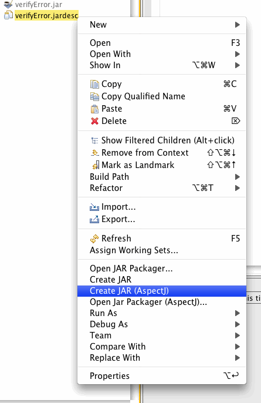

| Overview | This is the first official (non-development) release in the AJDT 1.6.x stream targeting Eclipse 3.4. The bulk of the work going into this release has been towards migrating the code base to work with Eclipse 3.4 and towards updating the build process to produce proper P2 metadata. |
|
| |
| AspectJ-aware Jar packager |
As described in Bug 111329,
the AspectJ-aware export jar wizard is now available
from the context menu of the package explorer. Right-click on a *.jardesc file and there are two new options:  The Create Jar (AspectJ) will create the jar from the jardesc file with AspectJ support (that is by using the AspectJ compiler instead of the Java compiler). The Open Jar Packager (AspectJ)... will open the jar packager wizard that creates jars with AspectJ support. |
|
|
|
| Mylyn integration | Mylyn, a task-focused interface for Eclipse
is now compatible with AJDT. We have written an AJDT bridge for Mylyn so that AspectJ code will be
accessible in your task context. This is an optional feature and will be automatically disabled if
Mylyn is not a part of your Eclipse installation. This feature requires Mylyn v3.0.1.
Below, there is a Mylyn task editor showing its task context. An aspect, a pointcut and a method are part of this context, but as shown in the package explorer to the left, there are more pointcuts and advice that are not part of the task context. |
|
|
|
| Aspect and In Path | Aspect path and in path entries that are provided by classpath containers will now appear in the AspectJ build UI as read-only. See Bug 243356. |
|
|
|
| Bug fixes | We have also spent some time fixing bugs and cleaning up the bug repository. As a result, we have resolved over 30 bugs: 98454, 101489, 102998, 104602, , 117911, 124474, 128992, 148538, 149346, 149905, 151730, 155222, 159867, 163541, 163546, 166210, 166291, 170043, 174485, 190240, 194362, 195017, 200460, 222755, 231451, , 235174, 237196, 237979, 238431, 238571, 238699, 239062, 240689, 242200, 242475, 243545, 244300, 244347, 244790, 245318. |
|
|
|
| Previous Releases | See here for information on the new features in AJDT 1.5.3. |